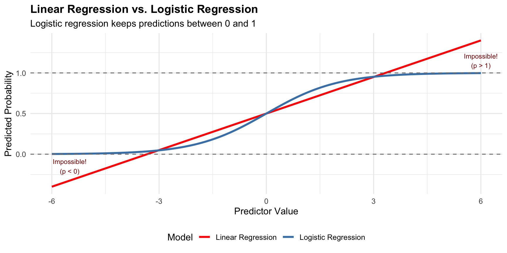
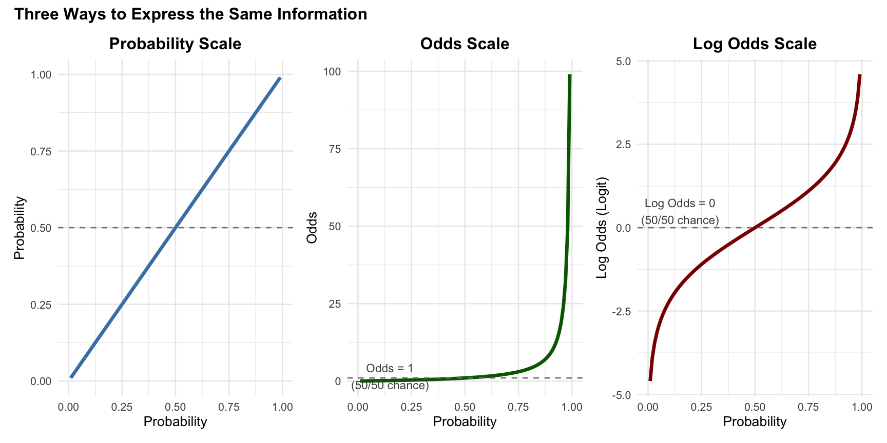
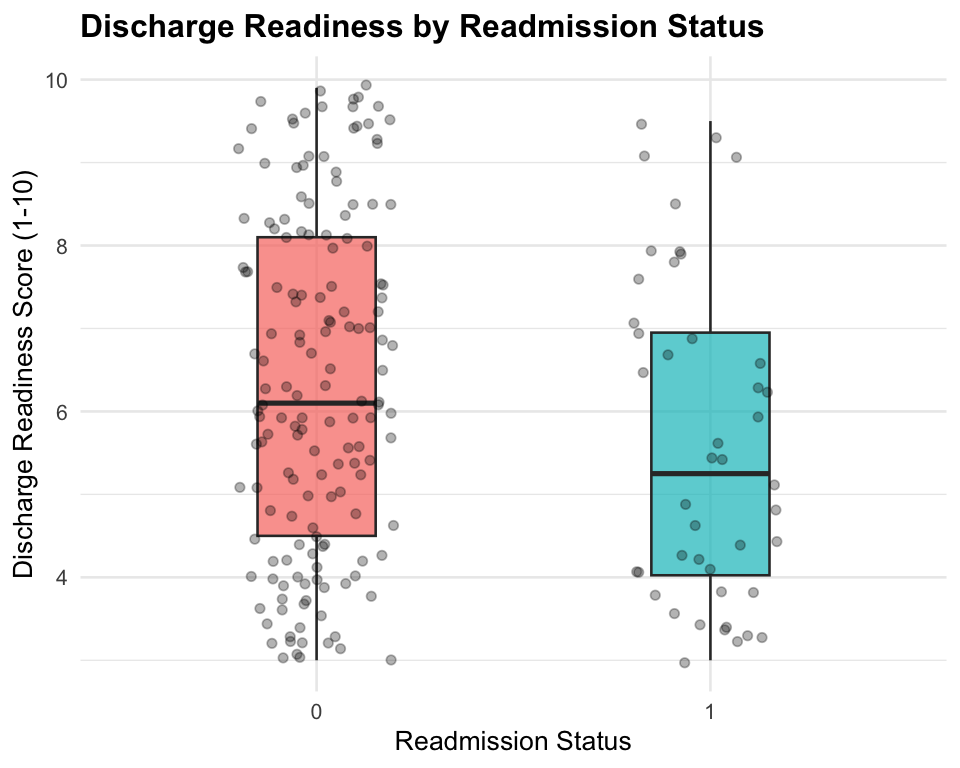
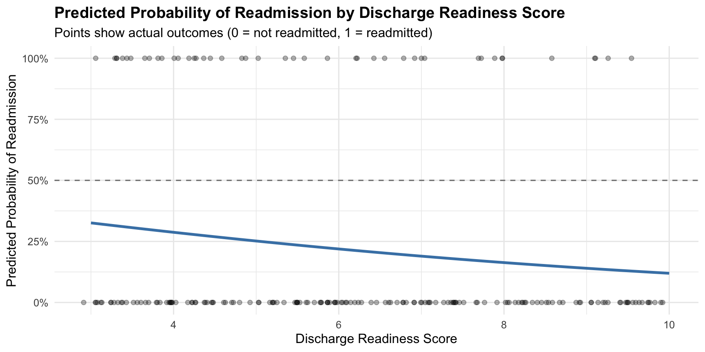

| Probability (p) | 1 - p | Odds | Interpretation |
|---|---|---|---|
| 0.10 | 0.90 | 0.11 | Very unlikely |
| 0.25 | 0.75 | 0.33 | |
| 0.33 | 0.67 | 0.49 | |
| 0.50 | 0.50 | 1.00 | Equal chance (50/50) |
| 0.67 | 0.33 | 2.03 | |
| 0.75 | 0.25 | 3.00 | |
| 0.90 | 0.10 | 9.00 | Very likely |
Week 14
2026-04-15
By the end of this lecture, you will be able to:
In healthcare management, many critical decisions involve binary outcomes:
These yes/no questions are fundamentally different from predicting continuous outcomes (e.g., blood pressure, weight, LOS). We cannot use linear regression because it is designed for continuous outcomes.
We need a different approach: logistic regression.
Imagine predicting readmission (1 = yes, 0 = no) from length of hospital stay (in days):
\[P(\text{Readmission}) = -0.2 + 0.05 \times \text{Length of Stay}\]
What if a patient has a very long length of stay of 30 days?
\[P(\text{Readmission}) = -0.2 + 0.05 \times 30 = 1.3\]
Probabilities must be between 0 and 1, but the predicted probability of readmission exceeds 1. Linear regression can produce impossible predictions for binary outcomes.
Logistic regression uses a special S-shaped curve (logistic function) that naturally stays between 0 and 1:

Figure 1
Probability: Chance that something happens (0 to 1)
Odds: Ratio of event happening to event not happening
\[\text{Odds} = \frac{p}{1-p} \qquad \Longleftrightarrow \qquad p = \frac{\text{Odds}}{1 + \text{Odds}}\]
Example (readmission probability = 0.30):
| Probability (p) | 1 - p | Odds | Interpretation |
|---|---|---|---|
| 0.10 | 0.90 | 0.11 | Very unlikely |
| 0.25 | 0.75 | 0.33 | |
| 0.33 | 0.67 | 0.49 | |
| 0.50 | 0.50 | 1.00 | Equal chance (50/50) |
| 0.67 | 0.33 | 2.03 | |
| 0.75 | 0.25 | 3.00 | |
| 0.90 | 0.10 | 9.00 | Very likely |
Key:
Odds cannot be negative (range: 0 to positive infinity). We need an unbounded scale (-∞ to +∞) for linear modeling.
Log Odds = natural logarithm of odds:
\[\text{Log Odds} = \ln\left(\frac{p}{1-p}\right)\]
| Probability (p) | 1 - p | Odds | Log Odds (Logit) |
|---|---|---|---|
| 0.10 | 0.90 | 0.11 | -2.207 |
| 0.25 | 0.75 | 0.33 | -1.109 |
| 0.33 | 0.67 | 0.49 | -0.713 |
| 0.50 | 0.50 | 1.00 | 0.000 |
| 0.67 | 0.33 | 2.03 | 0.708 |
| 0.75 | 0.25 | 3.00 | 1.099 |
| 0.90 | 0.10 | 9.00 | 2.197 |
Key points

Figure 2
Instead of predicting probability directly, we predict the log odds:
\[\ln\left(\frac{p}{1-p}\right) = \beta_0 + \beta_1 X_1 + \beta_2 X_2 + \cdots + \beta_k X_k\]
The coefficients (\(\beta\) values) represent the change in log odds per one-unit increase in the predictor.
Converting back to probability:
\[p = \frac{e^{\beta_0 + \beta_1 X_1 + \cdots}}{1 + e^{\beta_0 + \beta_1 X_1 + \cdots}} = \frac{odds}{1 + odds}\]
Unlike linear regression (OLS), logistic regression uses MLE because:
You don’t need to understand the math of MLE as R does it for you (glm() with family = binomial, R uses MLE automatically).
Simple logistic regression models the relationship between one predictor and a binary outcome (0/1).
Use it when:
Scenario: A quality improvement analyst wants to understand whether discharge readiness predicts 30-day readmission.
The dataset contains records for 200 patients discharged from a single hospital, with each row representing one patient and including their discharge readiness score, demographics, clinical characteristics, and whether they were readmitted within 30 days.
Hypothesis: Patients who feel more ready for discharge have a better understanding of follow-up care and are less likely to be readmitted.
Hospital Readmissions Reduction Program (HRRP): Hospitals with excess readmissions face financial penalties under Medicare. Understanding predictors of readmission helps target interventions.
Let’s load the data and required packages.
# load required packages
library(tidyverse)
# load data
readmit_data <- read.csv("https://raw.githubusercontent.com/mba642-spring-26/mba642-spring-26.github.io/refs/heads/main/datasets/week13_readmit_data.csv")
# Set the Medicaid as the reference category for insurance
readmit_data <- readmit_data |>
mutate(insurance = factor(insurance, levels = c("Medicaid", "Medicare", "Private")))
head(readmit_data, 3) X patient_id discharge_readiness age comorbidities insurance readmitted
1 1 1 7.9 80 2 Medicaid 1
2 2 2 6.9 59 2 Medicare 1
3 3 3 4.0 62 2 Private 0| Variable | Description | Type |
|---|---|---|
patient_id |
Unique identifier for each patient | ID |
discharge_readiness |
Discharge readiness score (1-10, higher = more ready) | Continuous |
age |
Patient age in years | Continuous |
comorbidities |
Number of chronic conditions (e.g., diabetes, hypertension) | Continuous |
insurance |
Insurance type (Medicaid, Medicare, or Private) | Categorical |
readmitted |
Whether readmitted within 30 days (1 = yes, 0 = no) — outcome | Binary |
Let’s start by exploring the distribution of our outcome variable (readmission) and how it relates to our key predictor (discharge readiness).
| Outcome | N | % |
|---|---|---|
| Not Readmitted | 156 | 78 |
| Readmitted | 44 | 22 |
| Total | 200 | 100 |
ggplot(readmit_data, aes(x = factor(readmitted), y = discharge_readiness,
fill = factor(readmitted))) +
geom_boxplot(alpha = 0.7, width = 0.3) +
geom_jitter(width = 0.2, alpha = 0.3) +
labs(title = "Discharge Readiness by Readmission Status",
x = "Readmission Status",
y = "Discharge Readiness Score (1-10)") +
theme_minimal(base_size = 10) +
theme(legend.position = "none",
plot.title = element_text(face = "bold"))
Let’s run a simple logistic regression model to see if discharge readiness predicts readmission. We can do this by using glm() with family = binomial:
Call:
glm(formula = readmitted ~ discharge_readiness, family = binomial(link = "logit"),
data = readmit_data)
Coefficients:
Estimate Std. Error z value Pr(>|z|)
(Intercept) -0.18297 0.53772 -0.340 0.7336
discharge_readiness -0.18136 0.08834 -2.053 0.0401 *
---
Signif. codes: 0 '***' 0.001 '**' 0.01 '*' 0.05 '.' 0.1 ' ' 1
(Dispersion parameter for binomial family taken to be 1)
Null deviance: 210.76 on 199 degrees of freedom
Residual deviance: 206.35 on 198 degrees of freedom
AIC: 210.35
Number of Fisher Scoring iterations: 4| Estimate | Std. Error | z value | p-value | |
|---|---|---|---|---|
| (Intercept) | -0.1830 | 0.5377 | -0.3403 | 0.7336 |
| discharge_readiness | -0.1814 | 0.0883 | -2.0531 | 0.0401 |
Model equation:
Log odds ratios are hard to interpret. Exponentiate to get odds ratios:
coef(): to get regression coefficients (log odds ratios)exp(): to exponentiate log odds ratios to get odds ratios (Intercept) discharge_readiness
0.8327902 0.8341325 Interpretation:
We can use the logistic regression model to get a predicted probability. For a patient with discharge readiness = 5:
Let’s get the predicted probabilities of readmission for a range of discharge readiness scores using R’s predict() function with type = "response":
new_patients <- data.frame(
discharge_readiness = c(4, 5, 6, 7, 8)
)
new_patients$predicted_prob <- predict(model_simple,
newdata = new_patients,
type = "response") # to get predicted probabilities, type = "response" is required. Without it, you would get log odds instead.
round(head(new_patients, 3), 3) discharge_readiness predicted_prob
1 4 0.287
2 5 0.252
3 6 0.219library(scales)
pred_data <- data.frame(discharge_readiness = seq(3, 10, by = 0.1))
pred_data$probability <- predict(model_simple, newdata = pred_data, type = "response")
ggplot() +
geom_line(data = pred_data, aes(x = discharge_readiness, y = probability),
color = "steelblue", linewidth = 1.2) +
geom_point(data = readmit_data, aes(x = discharge_readiness, y = readmitted),
alpha = 0.3, position = position_jitter(width = 0.1, height = 0)) +
geom_hline(yintercept = 0.5, linetype = "dashed", color = "gray50") +
labs(title = "Predicted Probability of Readmission by Discharge Readiness Score",
subtitle = "Points show actual outcomes (0 = not readmitted, 1 = readmitted)",
x = "Discharge Readiness Score",
y = "Predicted Probability of Readmission") +
scale_y_continuous(limits = c(0, 1), labels = scales::percent) +
theme_minimal(base_size = 12) +
theme(plot.title = element_text(face = "bold"))
Figure 4
Our model gives us probabilities, but in practice we often need to make binary decisions (e.g., “provide extra discharge support” vs. “standard discharge”).
To classify patients, we use a decision threshold (default = 0.5):
We then compare our predictions to actual outcomes using a classification table (also called a confusion matrix).
The confusion matrix has four possible outcomes:
| Actual: Not Readmitted | Actual: Readmitted | |
|---|---|---|
| Predicted: Not Readmitted | True Negative (TN) | False Negative (FN) |
| Predicted: Readmitted | False Positive (FP) | True Positive (TP) |
Let’s make a classification table for our simple logistic regression model using a 0.5 threshold:
readmit_data$predicted_prob <- predict(model_simple, type = "response")
readmit_data$predicted_class <- ifelse(readmit_data$predicted_prob >= 0.5, 1, 0)
class_table <- table(
Predicted = factor(readmit_data$predicted_class, levels = c(0, 1)),
Actual = factor(readmit_data$readmitted, levels = c(0, 1))
)
class_table Actual
Predicted 0 1
0 156 44
1 0 0Accuracy = (TP + TN) / Total = 156 / 200 = 78%
Scenario: A pharmacy wants to understand whether the number of medications a patient takes predicts whether they actually take their medications as prescribed.
Sample & data: The dataset contains records for 100 patients from a single community pharmacy. For each patient, staff recorded the number of medications currently prescribed and whether the patient was classified as adherent (1 = took medications as prescribed, 0 = did not) based on refill history and self-report during a follow-up visit.
Hypothesis: When patients have more medications to take, it becomes harder to keep track of everything; more pills to remember, different times of day, and more possible side effects. So we expect patients with more medications to be less likely to take their medications as prescribed.
Let’s load the data using the code below.
X patient_id num_medications adherent
1 1 1 9 0
2 2 2 7 1
3 3 3 3 0
4 4 4 4 1
5 5 5 7 1| Variable | Description | Type |
|---|---|---|
patient_id |
Unique identifier for each patient | ID |
num_medications |
Number of medications the patient is taking | Continuous |
adherent |
Whether the patient is adherent to medication (1 = yes, 0 = no) — outcome | Binary |
Task 1: Explore the data
Let’s first explore the relationship between the number of medications and adherence rates by creating medication groups.
Task 2: Run simple logistic regression
Task 4: Make predictions for three new patients
Use your fitted model to predict the probability of adherence for the following patients:
Multiple logistic regression includes two or more predictors to predict a binary outcome.
Use it when:
Our readmit_data already contains additional predictors:
The questions we have are:
We can run a multiple logistic regression model by including all predictors in the formula with the same glm() function and family = binomial:
Call:
glm(formula = readmitted ~ discharge_readiness + age + comorbidities +
insurance, family = binomial(link = "logit"), data = readmit_data)
Coefficients:
Estimate Std. Error z value Pr(>|z|)
(Intercept) -2.18252 1.28948 -1.693 0.09054 .
discharge_readiness -0.21828 0.09580 -2.278 0.02270 *
age 0.03432 0.01666 2.061 0.03933 *
comorbidities 0.40688 0.13602 2.991 0.00278 **
insuranceMedicare -1.18757 0.44030 -2.697 0.00699 **
insurancePrivate -1.71410 0.49612 -3.455 0.00055 ***
---
Signif. codes: 0 '***' 0.001 '**' 0.01 '*' 0.05 '.' 0.1 ' ' 1
(Dispersion parameter for binomial family taken to be 1)
Null deviance: 210.76 on 199 degrees of freedom
Residual deviance: 182.55 on 194 degrees of freedom
AIC: 194.55
Number of Fisher Scoring iterations: 5| Variable | Log.Odds.Ratio | Odds.Ratio | p.value |
|---|---|---|---|
| (Intercept) | -2.1825 | 0.1128 | 0.0905 |
| discharge_readiness | -0.2183 | 0.8039 | 0.0227 |
| age | 0.0343 | 1.0349 | 0.0393 |
| comorbidities | 0.4069 | 1.5021 | 0.0028 |
| insuranceMedicare | -1.1876 | 0.3050 | 0.0070 |
| insurancePrivate | -1.7141 | 0.1801 | 0.0006 |
Each coefficient represents the effect while holding all other variables constant.
Let’s predict readmission probability for a patient manually:
predict()We can more easily use predict() with type = "response" to obtain predicted probabilities for multiple patients at once. Consider three hypothetical patients:
discharge_readiness age comorbidities insurance predicted_prob
1 8 50 1 Private 0.02875452
2 6 65 2 Medicare 0.16315549
3 4 80 4 Medicaid 0.78882182Let’s check the accuracy of our multiple logistic regression model by creating a classification table using the same 0.5 threshold:
readmit_data$pred_prob_multiple <- predict(model_multiple, type = "response") # getting predicted probabilities of the data
readmit_data$pred_class_multiple <- ifelse(readmit_data$pred_prob_multiple >= 0.5, 1, 0) # classification
class_table_multiple <- table(
Predicted = readmit_data$pred_class_multiple,
Actual = readmit_data$readmitted
)
class_table_multiple Actual
Predicted 0 1
0 153 36
1 3 8Multiple regression accuracy: 80.5% (161 / 200 patients correctly classified)
Scenario: A surgical department wants to predict the risk of post-operative complications from patient age, BMI, surgery duration, and surgery type.
Sample & data: The dataset contains records for 180 patients who underwent surgery at a single hospital. For each patient, the team recorded age, BMI, surgery duration (minutes), whether the surgery was elective or emergency, and whether the patient experienced a post-operative complication (1 = yes, 0 = no) within 30 days of surgery.
Hypothesis: Older patients, patients with higher BMI, longer surgeries, and emergency (vs. elective) procedures are each expected to be associated with higher odds of complications.
Let’s start by loading the surgical complications dataset and converting surgery_type into a factor so R treats it as a categorical variable:
X patient_id age bmi surgery_duration surgery_type complication
1 1 1 68 24.1 170 Elective 1
2 2 2 44 34.6 30 Emergency 0
3 3 3 62 29.3 30 Emergency 0
4 4 4 59 33.1 62 Elective 1
5 5 5 50 29.1 168 Emergency 0Before we build the model, let’s review the variables we’ll be working with:
| Variable | Description | Type |
|---|---|---|
patient_id |
Unique identifier for each patient | ID |
age |
Patient age in years | Continuous |
bmi |
Body mass index (weight relative to height) | Continuous |
surgery_duration |
Duration of surgery in minutes | Continuous |
surgery_type |
Type of surgery (Elective or Emergency) | Categorical |
complication |
Whether a post-operative complication occurred (1 = yes, 0 = no) — outcome | Binary |
Now it’s your turn. Fit a multiple logistic regression model using all four predictors, then interpret what each coefficient tells you about complication risk.
Task 1: Run multiple logistic regression
Task 3: Predict for three patient profiles
Suppose we have three new patient profiles. Using the multiple logistic regression model you just fitted, predict each patient’s probability of experiencing a post-surgery complication.
glm() with family = binomial in Rexp() to get odds ratios
Both are due by 11:59 PM on Sunday, April 19.
Week 14 | Logistic Regression